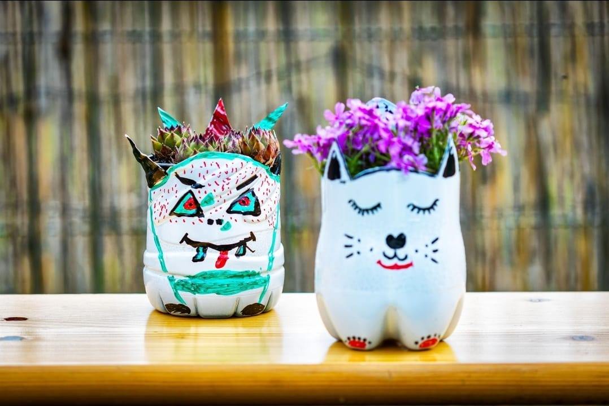

Pot Tanaman dari Galon

Ulasan Produk
Pot bunga dibuat dari botol plastik bekas yang dipotong dan dihias menjadi wadah tanaman. Produk ini membantu mengurangi sampah plastik sekaligus mempercantik ruangan atau halaman rumah.
Alat dan Bahan
- Botol plastik bekas 1 buah
- Gunting atau cutter
- Cat warna
- Kuas
- Tanah dan tanaman kecil
Langkah Kerja
- Cuci botol plastik hingga bersih dan keringkan.
- Potong botol menjadi dua bagian sesuai bentuk pot yang diinginkan.
- Buat lubang kecil di bagian bawah untuk mengalirkan air.
- Hias botol menggunakan cat dan kuas.
- Masukkan tanah dan tanaman ke dalam pot.
Estimasi Biaya
a) Alat
| No | Nama Alat | Harga |
|---|---|---|
| 1. | Gunting | Rp0 |
| Total Alat | Rp0 |
b) Bahan
| No | Nama Bahan | Harga |
|---|---|---|
| 1. | Botol plastik | Rp0 |
| 2. | Cat dan Kuas | Rp8.000 |
| 3. | Tanah dan tanaman | Rp5.000 |
| Total | Rp13.000 |
c) Harga Tenaga Kerja dan Produksi
| No | Nama | Harga |
|---|---|---|
| 1. | Total Alat | Rp0 |
| 2. | Total Bahan | Rp13.000 |
| 3. | Total Biaya Produksi | Rp13.000 |
d) Harga Jual
Harga jual produk pot unik ditetapkan sebesar Rp20.000 per unit.
e) Laba
| Keterangan | Jumlah |
|---|---|
| Harga jual | Rp20.000 |
| Total biaya produksi | Rp13.000 |
| Laba per unit | Rp7.000 |
Perhitungan Laba
Laba = Harga jual - Biaya produksi
Perhitungan:
Rp20.000 - Rp13.000 = Rp7.000
Jadi, laba kotor yang diperoleh dari penjualan satu unit Pot Unik adalah Rp7.000.